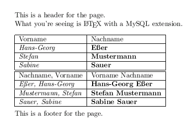

Integrating LaTeX and SQL databases
|
Now here's a little workshop that shows
Contents |
\begin{document}
\texdbfor{##AllUsers}{
Dear ##Title ##Lastname,
thanks for ordering ##Quant items of ##Product.
I'll ship it to your address in ##Town when I
find the time.
Best regards,
\newpage
}
\end{document}
|
First let's create the database and fill it with some values. We'll do a simple First name, last name database.
# mysql -p Enter password: Welcome to the MySQL monitor. Commands end with ; or \g. Your MySQL connection id is 8 to server version: 3.23.55-log Type 'help;' or '\h' for help. Type '\c' to clear the buffer. mysql> create database texdb; Query OK, 1 row affected (0.00 sec) mysql> use texdb Database changed mysql> create table Users ( id INT PRIMARY KEY, Vorname VARCHAR(40), Nachname VARCHAR(40) ); Query OK, 0 rows affected (0.00 sec)
id is the primary key. It's not really needed but more convenient. Vorname is german for "first name", Nachname is the "(last) name". We're now putting three people in there:
mysql> insert into Users values (0,"Hans-Georg","Eßer"); Query OK, 1 row affected (0.00 sec) mysql> insert into Users values (1,"Stefan","Mustermann"); Query OK, 1 row affected (0.00 sec) mysql> insert into Users values (2,"Sabine","Sauer"); Query OK, 1 row affected (0.01 sec)
Finally, let's check things worked well:
mysql> select * from Users; +----+------------+------------+ | id | Vorname | Nachname | +----+------------+------------+ | 0 | Hans-Georg | Eßer | | 1 | Stefan | Mustermann | | 2 | Sabine | Sauer | +----+------------+------------+ 3 rows in set (0.00 sec) mysql> _
Yes, we've done it.
Back to table of contents
The basic idea behind LaTeXDB is that you can write a pretty standard LaTeX file, but this file can include loops over result sets from database queries.
Only three new commands are needed to do what we want:
\texdbconnection{DBType,host,user,passwd,db}
\texdbdef{##query}{select var1,var2,... from table where...}{##VAR1,##VAR2,...}
Now here with ##query we set a name for query we're just
defining, and it will be reused later. The point is: You can define
several queries in one go, and then later reference each of them
separately. var1, ... are table field names, and they do
correspond to the ##VAR1 names that appear in the end. The order
must be the same: ##VAR1 belongs to var1, ##VAR2
to var2 etc. Finally table is a db table name.
\texdbfor{##query}{... some LaTeX stuff with ##VAR1, ...}
Here the ##query refers to the same query that was defined with
the previous command. So in each for loop you can decide which of your
several queries to use. They need to have different names, of course.
The variables in the second { } block are going to be substituted with
the corresponding values from the result rows, and for each row
the { } block will be used once. That's it.
Back to table of contents
OK, here's a simple example (example.tex) that uses the database table we've defined further up:
\documentclass[a4]{article}
% Standard LaTeX stuff
\usepackage{isolatin1}
% DB connection, SQL queries
\texdbconnection{MySQL,localhost,****,*****,texdb}
%\texdbconnection{File,-,-,-,/var/db/mydata/}
\texdbdef{##q1}{select Vorname,Nachname from Users}{##Vorname,##Nachname}
\texdbdef{##q2}{select CONCAT(Nachname,", ",Vorname),CONCAT(Vorname," ",Nachname) from Users}{##Vorname,##Nachname}
% Here the text begins
\begin{document}
This is a header for the page.
What you're seeing is \LaTeX{} with a MySQL extension.\\
\begin{tabular}{|l|l|}
\hline
Vorname & Nachname \\
\texdbfor{##q1}{\hline \textit{##Vorname} & \textbf{##Nachname}\\}
\hline
\hline
Nachname, Vorname & Vorname Nachname \\
\texdbfor{##q2}{\hline \textit{##Vorname} & \textbf{##Nachname}\\}
\hline
\end{tabular}\\
This is a footer for the page.
\end{document}
Note that there are only five line that make this document not be a regular LaTeX document:
Back to table of contents
Now what will you have to do in order to process this file? Well, instead of the standard latex example.tex command, just issue
latexdb example.texIf there is no error in preprocessing the file, this will just look like a regular run of latex.
The dvi files looks like this:

For debugging purposes, temporary files of latexdb are not deleted in this version. Next to your file.tex source, you will find two more files:
You can find this example and a further one in the examples/ tree of the package.
Back to table of contents
In many cases it is convenient to nest queries, e.g.
Now let's assume you have the following three tables:
Customers { id INT PRIMARY KEY, LastName VARCHAR(30), FirstName VARCHAR(30),
Street VARCHAR(50), ZIP VARCHAR(10), Town VARCHAR(40), Country VARCHAR(20) }
Products { id INT PRIMARY KEY, ProdName VARCHAR(30), Price REAL, Stock INT }
Sales { id INT PRIMARY KEY, CustID INT, Date DATE }
SaleItem { id INT PRIMARY KEY, SalesID INT, ProdID INT, Quantity INT }
The idea behind SaleItem and Sales is that you may have a sale that consists of several different products. Now even if you have a customer placing more than one order at one day, you can differentiate the different orders, because one order is one entry in the Sales table, and it consists of all the entries in the SaleItem table which have SaleItem.SalesID = Sales.id.
To first select all customers who bought something during the last week you would do something like
select Customers.id as CuID,LastName,FirstName,Street,ZIP,Town,Country, Sales.id as SalesID from Customers,Sales where CuID=Sales.CustID and Date < "2003-08-10"
In LaTeXDB this turns into
\texdbdef{##cust}
{select Customers.id as CuID,LastName,FirstName,Street,ZIP,Town,Country,
Sales.id
from Customers,Sales where CuID=Sales.CustID and Date < "2003-08-10"}
{##custid,##last,##first,##street,##zip,##town,##country,##salesid}
You could now start by creating a LaTeX document that loops over the result set:
\texdbfor{##cust}{
\newpage
\header % standard stuff on your letter
##first ##last \\
##street\\
##town ##tip\\
##country
Invoice for order No. ##salesid \\
Dear Mr/Mrs ##name, \\
...
}
This will already generate one invoice page for each sale by any customer. (A customer with several sales in the time period generates several invoices.)
Now let's add another query to cycle over the items of this sale. For that, in SQL we would do something like
select id as SaleItemID, ProdName, Price, Quantity, Price*Quantity from SaleItem, Products where SaleItem.SalesID = ##salesid and SaleItem.ProdID = Products.id
Here of course, we will need to replace "##salesid" with the sales ID we got in the outer loop.
With LaTeXDB you can write this query as
\texdbdef{##prods}
{select id, ProdName, Price, Quantity, Price*Quantity
from SaleItem, Products
where SaleItem.SalesID = ##salesid
and SaleItem.ProdID = Products.id}
{##id,##prodname,##price,##quant,##amount}
Notice how ##salseid is used in this \texdbdef statements. Since it is living inside a \texdbfor loop, ##salesid will be replaced with the current value from the outer loop for every instance.
Then you can use another \texdbfor loop to show all the products. If you put it all together, it will look like this:
\texdbdef{##cust}
{select Customers.id as CuID,LastName,FirstName,Street,ZIP,Town,Country,
Sales.id
from Customers,Sales where CuID=Sales.CustID and Date < "2003-08-10"}
{##custid,##last,##first,##street,##zip,##town,##country,##salesid}
\begin{document}
\texdbfor{##cust}{
\newpage
\header % standard stuff on your letter
##first ##last \\
##street\\
##town ##tip\\
##country
Invoice for order No. ##salesid \\
Dear Mr/Mrs ##name, \\
\texdbdef{##prods}
{select id, ProdName, Price, Quantity, Price*Quantity
from SaleItem, Products
where SaleItem.SalesID = ##salesid
and SaleItem.ProdID = Products.id}
{##id,##prodname,##price,##quant,##amount}
\begin{tabular}{l|r|r|r}
Product Name & Quantity & Price per unit & Total \\
\hline
\texdbfor{##prods}{
##prodname & ##price & ##quant & ##amount} \\
}
\end{tabular}
...
}
\end{document}
In the examples directory you'll find the subdirectory nested which holds a simpler example of the use of nesting. Note that the example from above has not been tested, it was a write-up from scratch intended to make sense and be understandable. The examples in examples/ however all proved OK, so you may be better on starting with one of them and modifying them to suit your needs.
There is no limit to the level of nesting, so you can really create complex stuff.
Back to table of contents